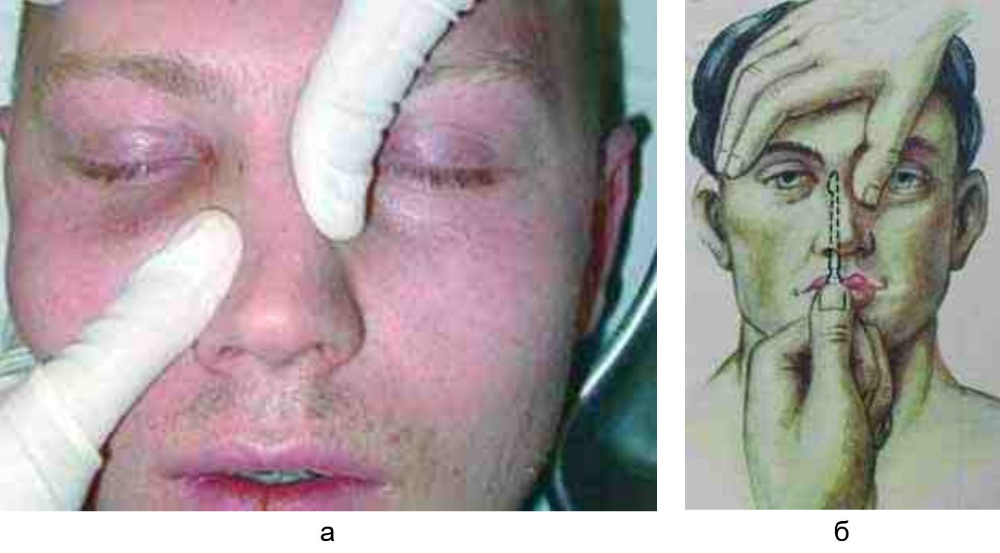
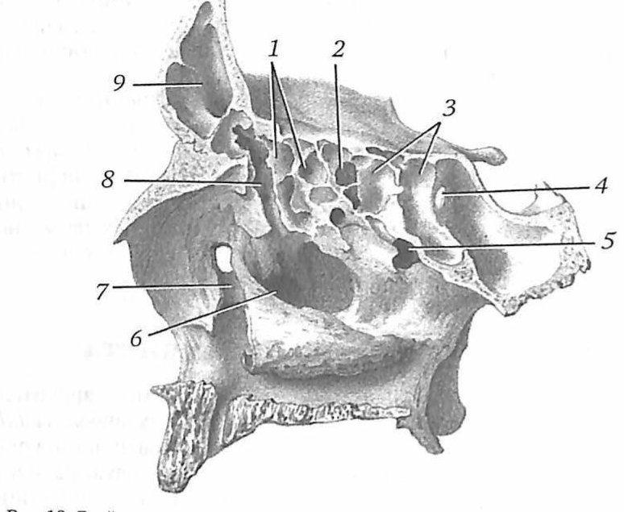

Словарь: Р
- РА сокращение
- реакция агглютинацииКоклюш у детей, «Список сокращений», с. 4
- РААКИ сокращение
- Российская Ассоциация Аллергологов и Клинических ИммунологовАллергический ринит, «Список сокращений», с. 5
- Радикальная операция (R0)
- удаление пораженного органа в пределах здоровых тканей вместе с зонами регионарного метастазирования без остаточных проявлений опухолевого процесса.Рак полости носа и придаточных пазух, «Термины и определения», с. 4
- Радикальная операция на верхнечелюстной пазухе
- Вскрытие верхнечелюстной пазухи через её переднюю стенку из разреза в преддверии рта под верхней губой (метод Колдуэлла — Люка, реже — Денкера), при необходимости со вскрытием клеток решётчатого лабиринта.не из КР: Пальчун В. Т., Лучихин Л. А., Магомедов М. М. «Руководство по практической оториноларингологии» (М.: МИА, 2010), с. 225–226
- Радиохирургия
- метод неинвазивного деструктивного воздействия на подкорковые структуры головного мозга при помощи Гамма-ножа.Болезнь Паркинсона, вторичный паркинсонизм и другие заболевания, проявляющиеся синдромом паркинсонизма, «Термины и определения»
- Разборчивость речи
- Величина, определяемая как отношение числа правильно понятых слов к общему числу прослушанных, выражаемое в процентах. В норме 100% разборчивость достигается при интенсивности речи 30–40 дБ.не из КР: Пальчун В. Т., Лучихин Л. А., Магомедов М. М. «Руководство по практической оториноларингологии» (М.: МИА, 2010), с. 88
- Разделительная функция гортани
- Защита нижних дыхательных путей от попадания пищи, жидкости, инородных тел и паров агрессивных веществ. Её обеспечивают сжиматели гортани, рефлекторно реагирующие на раздражение рецепторов; при глотании гортань на время перекрывается.не из КР: Бабияк В. И., Накатис Я. А., Говорун М. И. «Оториноларингология. Руководство», т. 2 (СПб.: Питер, 2009), с. 29–30
- Раздельная аттико-антротомия
- Консервативно-радикальная операция на среднем ухе, отличающаяся сохранением задней костной стенки наружного слухового прохода или костного «мостика» над входом в пещеру. Возможна лишь при уверенности хирурга в отсутствии кариозных изменений под «шпорой» и блока адитуса грануляциями или холестеатомой.не из КР: Пальчун В. Т., Лучихин Л. А., Магомедов М. М. «Руководство по практической оториноларингологии» (М.: МИА, 2010), с. 285
- Раздувание крыльев носа
- Расширение крыльев носа на вдохе, свидетельствующее о повышенной работе дыхания. У младенца отражает попытку увеличить поступление воздуха при вдохе и относится к тревожным признакам.не из КР: Watkinson J. C., Clarke R. W. (eds). Scott-Brown’s Otorhinolaryngology, Head and Neck Surgery, 8th ed., vol. 3, p. 1038; vol. 2, p. 16
- Рак носоглотки
- злокачественная опухоль, развивающаяся из неороговевающего эпителия носоглотки [1].Рак носоглотки, раздел 1.1
- Рак щитовидной железы
- злокачественная опухоль, развивающаяся из элементов железистого эпителия щитовидной железы.Рак щитовидной железы, раздел 1.1
- Раневая инфекция
- инфекционный процесс, развивающийся в ране.Хирургические инфекции кожи и подкожной клетчатки у детей, «Термины и определения»
- Ранооглохшие дети
- пациенты с долингвальной тугоухостью.Нейросенсорная тугоухость у детей, «Термины и определения», с. 6
- Распад акустического рефлекса
- Снижение амплитуды акустического рефлекса при длительной (не менее 10 с) стимуляции тоном 500 и 1000 Гц на 10 дБ выше порога рефлекса (reflex decay test). В норме за 10 с амплитуда остаётся постоянной либо снижается менее чем на 50%. Полураспад рефлекса (время, за которое амплитуда уменьшается вдвое) в течение 1,5 с патогномоничен для невриномы слухового нерва; сокращение времени полураспада до 6–10 с характерно для неопухолевых поражений ствола VIII нерва.не из КР: Пальчун В. Т., Лучихин Л. А., Магомедов М. М. «Руководство по практической оториноларингологии» (М.: МИА, 2010), с. 97–98
- Растущий перелом
- Прогрессирующее увеличение диастатического перелома, через который может пролабировать ущемлённая арахноидальная оболочка, образуя лептоменингеальную кисту; в грыжевое выпячивание могут вовлекаться вещество и желудочки мозга. Встречается только у младенцев и детей раннего и младшего возраста.не из КР: КР «Множественные переломы мозгового и лицевого отделов черепа», раздел 1.5, с. 17
- Расщелина верхней губы, альвеолярного отростка и неба
- врожденный порок развития, при котором происходит нарушение в средней зоне лица: расщепление губы на два или три фрагмента, деформация хрящевого отдела носа, порочное прикрепление и нарушение функции пучков круговой мышцы рта, дефект альвеолярного отростка верхней челюсти. При расщелинах неба имеется сообщение полости рта с полостью носа через дефект тканей по средней линии неба, отличное от нормального расположение и прикрепление мышц мягкого неба, расширение среднего отдела глотки и укорочение мягкого неба.Расщелина верхней губы и нёба, «Термины и определения», с. 5
- Расщелина губы и нёба
- Тяжёлый порок развития челюстно-лицевой области: нарушение непрерывности верхней губы, альвеолярного отростка и нёба со значимыми функциональными нарушениями.не из КР: КР «Одно- и двусторонняя расщелина верхней губы, альвеолярного отростка, твердого и мягкого нёба», раздел «1.1 Определение заболевания или состояния», с. 5
- Расщелина язычка
- Самая незначительная форма расщепления мягкого нёба; возникает при несращении эмбриональных зачатков мягкого нёба (небных пластин по средней линии). Расщепление мягкого нёба в целом варьирует от расщепления одного язычка до полного.не из КР: Бабияк В. И., Накатис Я. А., Говорун М. И. «Оториноларингология. Руководство», т. 1 (СПб.: Питер, 2009), с. 663
- Рахит
- Заболевание детей грудного и раннего возраста, возникающее при изменениях кальциево-фосфатного гомеостаза и приводящее к нарушению минерализации костной ткани.не из КР: КР «Недостаточность витамина D. Рахит.», раздел «1.1 Определение заболевания или состояния»
- РВ сокращение
- риновирусОРВИ у детей, «Список сокращений», с. 4
- Реабилитационный диагноз
- список проблем пациента сформулированный в категориях МКФ и отражающий все актуальные аспекты функционирования пациента — призван на своей основе сформулировать цель, задачи и выработать стратегию реабилитации. В реабилитационный диагноз включаются только те выявленные проблемы пациента, которые влияют или отражают его функционирование. Речевой процессор (звуковой речевой процессор, аудиопроцессор, слуховой процессор) – внешняя часть системы кохлеарной имплантации, предназначенная для восприятия звуковой информации, осуществляющая обработку, кодировку и дальнейшую передачу цифрового сигнала на внутреннюю часть системы кохлеарной имплантации. Семейно-центрированный подход к (ре)абилитации ребенка с нарушением слуха – подход, основанный на максимальном вовлечении семьи в программу помощи ребенку.Нейросенсорная тугоухость у детей, «Термины и определения», с. 6
- Ревматизм
- Системное воспалительное заболевание соединительной ткани (греч. rheumatismos — истечение жидкости) с преимущественным поражением сердечно-сосудистой системы. Развивается у предрасположенных лиц, главным образом молодого возраста, в связи с инфекцией, вызванной бета-гемолитическим стрептококком группы А; началу или рецидиву предшествуют ангина, фарингит, ринит или скарлатина.не из КР: Бабияк В. И., Накатис Я. А., Говорун М. И. «Оториноларингология. Руководство», т. 2 (СПб.: Питер, 2009), с. 95
- Ревматическая лихорадка
- Негнойное иммунное осложнение стрептококковой инфекции: антитела к М-белку стрептококка перекрёстно реагируют с тканью сердца и приводят к панкардиту. Возможны мигрирующий артрит крупных суставов, кольцевидная эритема, подкожные узелки и малая хорея; как правило, развивается через 1–4 недели после инфекции.не из КР: Watkinson J., Clarke R. (eds.). Scott-Brown's Otorhinolaryngology, Head and Neck Surgery, 8th ed., vol. 3 (CRC Press, 2018), с. 841 PDF
- Ревматоидные факторы (РФ)
- аутоантитела IgM, реже IgA и IgG изотипов, реагирующие с Fc-фрагментом IgG.Ревматоидный артрит, «Термины и определения»
- Ревматоидный фактор (РФ)
- аутоантитела, реагирующие в качестве аутоантигена с собственными иммуноглобулинами G, подвергшимися изменениям под влиянием какого-либо агента (например, вируса)Юношеский артрит с системным началом , «Термины и определения»
- Регионарный рецидив
- возникновение той же опухоли в зоне регионарного лимфооттока после оперативного иссечения или лучевого лечения.Рак молочной железы , «Термины и определения»
- Регургитация (симптом)
- пассаж содержимого желудка вследствие рефлюкса в нижнюю часть глотки, ротовую полость и/или за пределы ротовой полости.Гастроэзофагеальная рефлюксная болезнь новорожденных, «Термины и определения»
- Резектабельная опухоль
- опухоль, которую возможно удалить технически с учетом степени ее распространения.Рак молочной железы , «Термины и определения»
- Резекция легкого
- все варианты хиругических вмешательств по поводу их метастатического поражения (Лобэктомия (удаление доли легкого), Лобэктомия. Одномоментная двухсторонняя операция на легких, Лобэктомия расширенная при новообразованиях легких, илобэктомия расширенная при новообразованиях легких, Удаление новообразования легкого (атипичная резекция), Одномоментная двухсторонняя операция на легких, Роботассистированное удаление новообразования легкого (атипичная резекция), Удаление новообразования легкого (атипичная резекция) видеоторакоскопическое, Пневмонэктомия, Пневмонэктомия с резекцией и реконструкцией бифуркации трахеи, Комбинированная пневмонэктомия, Пневмонэктомия расширенная, Пневмонэктомия. Видеоторакоскопическая резекция легких, Пневмонэктомия видеоторакоскопическая, Резекция легкого (более одной доли), Резекция легких видеоторакоскопическая, Анатомическая сегментэктомия легкого, Сегментэктомия легкого. Одномоментная двухсторонняя операция на легких, Сегментэктомия легкого видеоторакоскопическая, Сублобарная атипичная резекция легких, Реконструктивно-пластические вмешательства на грудной стенке и диафрагме при опухолях легких)Герминогенные опухоли у мужчин, «Термины и определения»
- Резорбтивное действие
- Общее токсическое действие вещества после всасывания в кровь, помимо местного деструктивного. Особенно выражено у органических кислот, прежде всего уксусной: недиссоциированная уксусная кислота попадает в кровоток и вызывает гемолиз эритроцитов; при поступлении в желудок развиваются коагулопатия, нефро- и гепатопатия.не из КР: КР «Химический ожог пищевода», раздел 1.6, с. 11
- Резорбция
- процесс разрушения (рассасывания, деградации) костной ткани или корня зуба под действием остеокластов.Лечение острой травмы зубов у пациентов детского возраста, «Термины и определения»
- Реиннервирующая операция
- Операция, при которой восстанавливают иннервацию мимических мышц. Условия: в ядре лицевого нерва на стороне поражения достаточно функционирующих клеточных тел, проксимальный отрезок нерва сохраняет связь с ядром и способен к аксональной регенерации, дистальный — контактирует с функционирующими мышечными единицами. Успешна примерно в течение 18 месяцев от начала паралича.не из КР: Watkinson J. C., Clarke R. W. (eds). Scott-Brown’s Otorhinolaryngology, Head and Neck Surgery, 8th ed., vol. 3, с. 1383 и 1386
- Рекрутмент
- Феномен ускоренного нарастания громкости (ФУНГ): при сенсоневральной тугоухости громкость звука оказывается выше, чем можно ожидать при такой же степени тугоухости по звукопроведению, и чем больше интенсивность звука, тем сильнее прирост громкости. Используется для различения кохлеарной и ретрокохлеарной тугоухости.не из КР: Бабияк В. И., Накатис Я. А., Говорун М. И. «Оториноларингология. Руководство», т. 2 (СПб.: Питер, 2009), с. 342
- Рентгенография носоглотки
- Метод уточнения распространённости опухолевого процесса в носоглотке, выявления инородных тел и гипертрофии лимфаденоидной ткани у детей, когда задняя риноскопия затруднена или невозможна.не из КР: Пальчун В. Т., Лучихин Л. А., Магомедов М. М. «Руководство по практической оториноларингологии» (М.: МИА, 2010), с. 118
- Рентгенография околоносовых пазух
- Обзорное рентгенологическое исследование пазух, которое обычно начинают со снимка в носоподбородочной проекции: на нём видны глазницы, лобные и верхнечелюстные пазухи, пазухи решётчатой кости. Снимки в вертикальном положении позволяют выявить уровень жидкости при минимальном количестве секрета в пазухе (от 0,5–1 мл).не из КР: Пальчун В. Т., Лучихин Л. А., Магомедов М. М. «Руководство по практической оториноларингологии» (М.: МИА, 2010), с. 115
- Рентгенография органов грудной клетки (рентгенография легких)
- методика получения проекционного изображения исследуемого объекта при регистрации ослабленного в исследуемом объекте рентгеновского излученияЗлокачественное новообразование бронхов и легкого, «Термины и определения»
- Рентгеноконтрастное исследование пищевода
- Исследование с искусственным контрастированием, так как пищевод сам рентгенонеконтрастен; чаще всего используют бария сульфат. Позволяет определить наполняемость пищевода, его форму, состояние просвета, проходимость и эвакуаторную функцию.не из КР: Бабияк В. И., Накатис Я. А., Говорун М. И. «Оториноларингология. Руководство», т. 1 (СПб.: Питер, 2009), с. 720
- Репозиция
- хирургическое вмешательство при переломе, заключающееся в устранении смещения и сопоставлении костных отломков с целью восстановления нормальных анатомических соотношений.Переломы, вывихи пястных костей и фаланг пальцев кисти, «Термины и определения»
- Репозиция костей носа
- Вправление смещённых отломков костей наружного носа после перелома. При боковом смещении применяют пальцевую репозицию: давление большим пальцем на спинку носа со стороны смещения, в момент вправления обычно слышен хруст. При вдавленном переломе в полость носа на заранее измеренную глубину вводят носовой элеватор (Волкова) и тракцией кпереди и кверху восстанавливают положение спинки носа; при смещении кзади и в сторону оба приёма сочетают. Если отломки остаются подвижными, их фиксируют тампонадой полости носа или наружной повязкой.не из КР: Пальчун В. Т., Лучихин Л. А., Магомедов М. М. «Руководство по практической оториноларингологии» (М.: МИА, 2010), разд. 3.1.4, с. 223–225
- Репозиция отломков
- процедура, целью которой является сопоставление отломков кости.Перелом верхней челюсти, «Термины и определения»
- Репризы 2 значения
- 1звучные судорожные вдохи, возникающие при прохождении воздуха через суженную вследствие ларингоспазма голосовую щельКоклюш у детей, «Термины и определения», с. 7В разборах: Коклюш у детей
- 2Звучные судорожные вдохи, возникающие при прохождении воздуха через голосовую щель, суженную вследствие ларингоспазма.не из КР: КР «Коклюш у детей», раздел «Термины и определения»В разборах: РСВ-инфекция у детей
- Ререзекция
- Повторное иссечение тканей по краю раны, если в краях первичного удаления микроскопически обнаружена опухоль (по данным краевых биопсий).не из КР: Watkinson J. C., Clarke R. W. (eds). Scott-Brown’s Otorhinolaryngology, Head and Neck Surgery, 8th ed., vol. 3, p. 270 PDF
- Респираторно-синцитиальный вирус
- Наиболее частая причина респираторных инфекций у человека. В 1–2% случаев осложняется бронхиолитом, особенно опасным у младенцев и пожилых; может провоцировать обострения бронхиальной астмы и хронической обструктивной болезни лёгких.не из КР: Watkinson J. C., Clarke R. W. (eds). Scott-Brown’s Otorhinolaryngology, Head and Neck Surgery, 8th ed., vol. 1, p. 198
- Респираторный дистресс-синдром взрослых
- Острое состояние, при котором диффузный отёк воздушных пространств лёгких без явной левожелудочковой недостаточности вызывает гипоксемию. Консенсусные критерии: начало в течение недели после повреждающего фактора; двусторонние лёгочные инфильтраты на рентгенограмме, не объяснимые другой патологией; отсутствие признаков левожелудочковой недостаточности или перегрузки жидкостью.не из КР: Watkinson J. C., Clarke R. W. (eds.) «Scott-Brown's Otorhinolaryngology Head & Neck Surgery», 8th ed. (CRC Press, 2018), т. 1, с. 400 (PDF)
- Ретракционный карман
- Ограниченный атрофический участок барабанной перепонки, втянутый внутрь отрицательным давлением в барабанной полости. При стойком отрицательном давлении карман расширяется; эпителий в нём не может мигрировать наружу, застойные массы плоского эпителия инфицируются, и формируется холестеатома.не из КР: Probst R., Grevers G., Iro H. Basic Otorhinolaryngology (Thieme), с. 237
- Ретракция барабанной перепонки
- Втяжение барабанной перепонки вследствие длительного отрицательного давления в барабанной полости; может быть в ненатянутой (pars flaccida) или в натянутой (pars tensa) части, ограниченной или диффузной. Ретракция предшествует формированию ретракционного кармана.не из КР: Нацруководство «Оториноларингология» под ред. В. Т. Пальчуна, гл. 11 «Болезни уха», раздел «Хронический гнойный средний отит»
- Ретробульбарная гематома
- Кровоизлияние в клетчатку за глазным яблоком. Признаки: нарастающая боль, экзофтальм (проптоз) с сопротивлением вправлению глаза, напряжённое глазное яблоко, офтальмоплегия, снижение остроты зрения, расширенный зрачок, утрата прямой реакции на свет. Требует неотложной декомпрессии: рану вскрывают, гематому эвакуируют, выполняют латеральную кантотомию и нижнюю кантолиз; ожидать признаков сдавления зрительного нерва не следует.не из КР: Watkinson J. C., Clarke R. W. (eds). Scott-Brown’s Otorhinolaryngology, Head and Neck Surgery, 8th ed., vol. 1, p. 1245 PDF; Watkinson J. C., Clarke R. W. (eds). Scott-Brown’s Otorhinolaryngology, Head and Neck Surgery, 8th ed., vol. 3, p. 1272 PDF
- Ретрокохлеарное поражение
- Нарушение слуха, при котором страдает слуховой нерв, в отличие от сенсорного кохлеарного поражения. Основные причины: опухоли внутреннего слухового прохода и мостомозжечкового угла, сдавление нерва сосудистыми петлями, поражение нерва или зоны его входа при рассеянном склерозе и другие воспалительные процессы.не из КР: Probst R., Grevers G., Iro H. Basic Otorhinolaryngology (Thieme), с. 259
- Ретрофарингеальные лимфоузлы
- Заглоточные лимфатические узлы, в которые происходит лимфоотток от верхних отделов глотки. Поражение связано с опухолями ротоглотки, околоносовых пазух, грушевидного синуса и с запущенными первичными опухолями любой локализации; диагностируется практически всегда лучевыми методами.не из КР: Probst R., Grevers G., Iro H. «Basic Otorhinolaryngology» (Thieme), с. 109 PDF; Watkinson J. C., Clarke R. W. (eds). Scott-Brown’s Otorhinolaryngology, Head and Neck Surgery, 8th ed., vol. 3, p. 354 PDF
- Ретрофарингеальный абсцесс
- Заглоточный абсцесс: гнойное воспаление лимфатических узлов и рыхлой клетчатки между фасцией глоточной мускулатуры и предпозвоночной фасцией; встречается у детей до 6–7 лет. Как правило, носит вторичный характер и осложняет заболевания, травмы и инородные тела глотки.не из КР: Пальчун В. Т., Лучихин Л. А., Магомедов М. М. «Руководство по практической оториноларингологии» (М.: МИА, 2010), с. 264; Бабияк В. И., Накатис Я. А., Говорун М. И. «Оториноларингология. Руководство», т. 1 (СПб.: Питер, 2009), с. 656
- Рефрактерная ГЭРБ
- в случае отсутствия убедительной клинической и эндоскопической ремиссии в течение 4-8 недель проведения терапии.Гастроэзофагеальная рефлюксная болезнь новорожденных, «Термины и определения»
- Рецидив заболевания
- появление любых новых опухолевых очагов у пациентов, достигших ранее полного ответа согласно критериям оценки ответа на терапию у пациентов с НФК.Рак носоглотки у детей, «Термины и определения», с. 5
- Рецидивирующий острый синусит
- диагноз правомочен при наличии у пациента за последний год по данным анамнеза и/или медицинской документации 4 и более эпизодов острого синусита.Гипертрофия аденоидов. Гипертрофия нёбных миндалин, «Термины и определения», с. 5
- Рецидивирующий острый средний отит 2 значения
- 1наличие трех или более отдельных эпизодов ОСО в течение 6 месяцев или 4 и более эпизодов за период 12 месяцев.Отит средний острый, «Термины и определения», с. 5; Гипертрофия аденоидов. Гипертрофия нёбных миндалин, «Термины и определения», с. 5В разборах: Мастоидит, Отит средний острый, Гипертрофия аденоидов. Гипертрофия нёбных миндалин
- 2Рецидивирующий острый средний отит – наличие трех или более отдельных эпизодов ОСО в течение 6 месяцев или 4 и более эпизодов за период 12 месяцев.Отит средний острый, «Термины и определения», с. 5В разборах: Отит средний острый
- Речевая аудиометрия
- Субъективное исследование слуха, при котором вместо тонов на каждое ухо отдельно подают записанную речь; показывает, насколько слух пригоден для общения.не из КР: Пальчун В. Т., Лучихин Л. А., Магомедов М. М. «Руководство по практической оториноларингологии» (М.: МИА, 2010), с. 88
- Речевой процессор (звуковой речевой процессор, аудиопроцессор, слуховой процессор) 2 значения
- 1внешняя часть системы кохлеарной имплантации, предназначенная для восприятия звуковой информации, осуществляющая обработку, кодировку и дальнейшую передачу цифрового сигнала на внутреннюю часть системы кохлеарной имплантации.Нейросенсорная тугоухость у детей, «Термины и определения»В разборах: Нейросенсорная тугоухость у детей
- 2часть системы кохлеарной имплантации, предназначенная для получения информации об окружающих звуках, осуществления анализа, кодировки и дальнейшей передачи цифрового сигнала на кохлеарный имплант.Нейросенсорная тугоухость у взрослых, «Термины и определения», с. 5В разборах: Нейросенсорная тугоухость у взрослых
- Решётчатая булла
- Увеличенная клетка решётчатого лабиринта, которую при эндоскопии нередко видно под средней носовой раковиной.не из КР: Пальчун В. Т., Лучихин Л. А., Магомедов М. М. «Руководство по практической оториноларингологии» (М.: МИА, 2010), с. 27
- Решётчатая пластинка
- Пластинка решётчатой кости, имеющая около 30 отверстий для прохождения обонятельных нервов; отделяет решётчатую кость от передней черепной ямки.не из КР: Гайворонский И. В. и соавт. «Функциональная анатомия ЛОР-органов» (СПб.: СпецЛит, 2022), с. с. 5 PDF; Бабияк т.1, с. 56 (рис.)
- Решётчатые артерии
- Передняя и задняя решётчатые артерии — ветви глазной артерии из бассейна внутренней сонной артерии. Передняя идёт по одноимённому каналу через решётчатую кость и полость носа и кровоснабжает кровлю носа, обонятельную щель и верхнюю раковину; задняя меньше передней и имеется только примерно у 80% людей.не из КР: Watkinson J. C., Clarke R. W. (eds.) «Scott-Brown's Otorhinolaryngology Head & Neck Surgery», 8th ed. (CRC Press, 2018), т. 1, гл. 106, PDF с. 1217
- Решётчатые ячейки
- Ячейки решётчатого лабиринта; делятся на передние, средние и задние. Передние и средние открываются в средний носовой ход, задние — в верхний. Латерально ограничены глазничной пластинкой решётчатой кости (медиальной стенкой глазницы).не из КР: Гайворонский И. В. и соавт. «Функциональная анатомия ЛОР-органов» (СПб.: СпецЛит, 2022), с. 47–48 (с. 25 PDF)
- Решётчатый лабиринт
- Парное ячеистое костное образование решётчатой кости, сращённое с её решётчатой пластинкой и свешивающееся в полость носа; вытянуто в переднезаднем направлении. Задние ячейки обычно близко контактируют с каналом зрительного нерва, а от глазницы лабиринт отделён тонкой бумажной пластинкой.не из КР: Бабияк В. И., Накатис Я. А., Говорун М. И. «Оториноларингология. Руководство», т. 1 (СПб.: Питер, 2009), с. 56
- Ригидная эзофагоскопия
- Осмотр внутренней поверхности пищевода жёстким эзофагоскопом (трубкой), в отличие от осмотра гибким фиброскопом.не из КР: Бабияк В. И., Накатис Я. А., Говорун М. И. «Оториноларингология. Руководство», т. 1 (СПб.: Питер, 2009), с. 721
- Ригидность затылочных мышц
- Тоническое (спастическое) напряжение мышц затылка, ранний и постоянный симптом менингита: голова запрокинута назад, пассивное приведение её к груди вызывает боль в позвоночнике, а активно коснуться подбородком грудины больной не может.не из КР: Бабияк В. И., Накатис Я. А., Говорун М. И. «Оториноларингология. Руководство», т. 2 (СПб.: Питер, 2009), с. 782
- Ринит
- Воспаление слизистой оболочки полости носа. Острый ринит чаще развивается на фоне ОРВИ, начинается остро и поражает сразу обе половины носа.не из КР: Пальчун В. Т., Лучихин Л. А., Магомедов М. М. «Руководство по практической оториноларингологии» (М.: МИА, 2010), с. 312
- Риновирус
- Группа одноцепочечных РНК-вирусов, возбудители простуды. Передаются контактным путём или аэрозолем через слизистую оболочку носа и конъюнктиву. Нарушают барьер эпителиальных клеток, что облегчает проникновение бактерий, и могут провоцировать обострения бронхиальной астмы, хронической обструктивной болезни лёгких и муковисцидоза.не из КР: Watkinson J. C., Clarke R. W. (eds). Scott-Brown’s Otorhinolaryngology, Head and Neck Surgery, 8th ed., vol. 1, p. 197
- Риноманометрия
- Метод объективной оценки носового дыхания: по измеренным воздушному потоку и разности давлений рассчитывают сопротивление и объём воздуха, проходящего через каждую половину полости носа. Различают переднюю, заднюю и ретроназальную риноманометрию; при передней датчик давления вводят через преддверие в одну половину носа, вторую исключают из дыхания обтуратором.не из КР: Пальчун В. Т., Лучихин Л. А., Магомедов М. М. «Руководство по практической оториноларингологии» (М.: МИА, 2010), с. 33; Бабияк В. И., Накатис Я. А., Говорун М. И. «Оториноларингология. Руководство», т. 1 (СПб.: Питер, 2009), с. 110
- Риносептопластика
- Одномоментное вмешательство на перегородке носа и наружном носе. Функциональная риносептопластика включает коррекцию перегородки и наружного носа, как правило с остеотомиями костного остова. Для устранения дефекта используют аутохрящ (перегородка, ушная раковина, ребро) или аутокость, реже консервированный гомо- или гетерохрящ.не из КР: Пальчун В. Т., Лучихин Л. А., Магомедов М. М. «Руководство по практической оториноларингологии» (М.: МИА, 2010), с. 214; Probst R., Grevers G., Iro H. «Basic Otorhinolaryngology: A Step-by-Step Learning Guide» (Thieme), с. 41
- Риносинусит
- Диагноз, устанавливаемый клинически по характерным симптомам при наличии объективных признаков воспаления слизистой оболочки (определение EPOS). Острым риносинусит считают при длительности симптомов менее 12 недель, хроническим — при более длительной.не из КР: Watkinson J. C., Clarke R. W. (eds). Scott-Brown’s Otorhinolaryngology, Head and Neck Surgery, 8th ed., vol. 1, p. 1025
- рН-импедансометрия
- Метод, в котором регистрируется изменение сопротивления переменному току между металлическими электродами при прохождении содержимого по просвету пищевода: жидкость повышает проводимость и снижает импеданс. Позволяет выявлять и некислотный рефлюкс.не из КР: Behrbohm H., Kaschke O., Nawka T. et al. «Ear, Nose, and Throat Diseases with Head and Neck Surgery», с. 1014 PDF; КР «Гастроэзофагеальная рефлюксная болезнь у детей», раздел «Диагностика», с. 21
- РНГА сокращение
- реакция непрямой гемагглютинацииКоклюш у детей, «Список сокращений», с. 4
- РОД сокращение
- разовая очаговая дозаРак носоглотки у детей, «Список сокращений», с. 4
- Родовая травма
- повреждение органов вследствие механических причин во время родов [1].Кефалгематома при родовой травме, раздел 1.1
- Рожистое воспаление
- Острое, нередко переходящее в хроническую форму инфекционное заболевание, характеризующееся серозно-экссудативным воспалением кожи (реже — слизистых оболочек); возбудителем является гемолитический стрептококк.не из КР: Бабияк В. И., Накатис Я. А., Говорун М. И. «Оториноларингология. Руководство», т. 1 (СПб.: Питер, 2009), с. 120
- РОСО сокращение
- рецидивирующий острый средний отитОтит средний острый, «Список сокращений», с. 4
- Ростковые зоны
- Участки роста перегородки носа у детей. Неоправданное применение септопластики у молодых пациентов может повредить ростковые зоны перегородки и привести к отдалённым нарушениям.не из КР: Probst R., Grevers G., Iro H. «Basic Otorhinolaryngology: A Step-by-Step Learning Guide» (Thieme), с. 40
- Ротоглотка
- Средний отдел глотки. Спереди он граничит с зевом, который сверху ограничен мягким нёбом, снизу корнем языка, с боков передними и задними нёбными дужками.не из КР: Бабияк В. И., Накатис Я. А., Говорун М. И. «Оториноларингология. Руководство», т. 1 (СПб.: Питер, 2009), с. 418
- РОФ сокращение
- Российское общество фтизиатровСаркоидоз, «Список сокращений», с. 4
- РРО сокращение
- Российское респираторное обществоСаркоидоз, «Список сокращений», с. 4
- РРС сокращение
- ректороманоскопияИнородное тело в пищеварительном тракте, «Список сокращений», с. 4
- РСВ сокращение
- респираторно-синцитиальный вирусРСВ-инфекция у детей, «Список сокращений», с. 4
- РСВИ сокращение 2 значения
- 1респираторно-синцитиальная вирусная инфекцияОРВИ у детей, «Список сокращений», с. 4В разборах: ОРВИ у детей
- 2респираторно-синцитиальная вирусная инфекцияхРСВ-инфекция у детей, «Список сокращений», с. 4В разборах: РСВ-инфекция у детей
- РСП сокращение
- Рубцовый стеноз пищеводаХимический ожог пищевода, «Список сокращений», с. 4
- РТ-ПЦР сокращение
- полимеразная цепная реакция в реальном времениРак носоглотки, «Список сокращений», с. 4
- Рукоятка молоточка
- Часть молоточка, которая непосредственно соединяется с барабанной перепонкой: прикрепляется к ней радиальными соединительнотканными волокнами, в месте прикрепления есть слой гиалинового хряща. Головка молоточка контактирует с наковальней.не из КР: Гайворонский И. В. и соавт. «Функциональная анатомия ЛОР-органов» (СПб.: СпецЛит, 2022), с. 58 PDF; Пальчун В. Т., Лучихин Л. А., Магомедов М. М. «Руководство по практической оториноларингологии» (М.: МИА, 2010), с. 93

